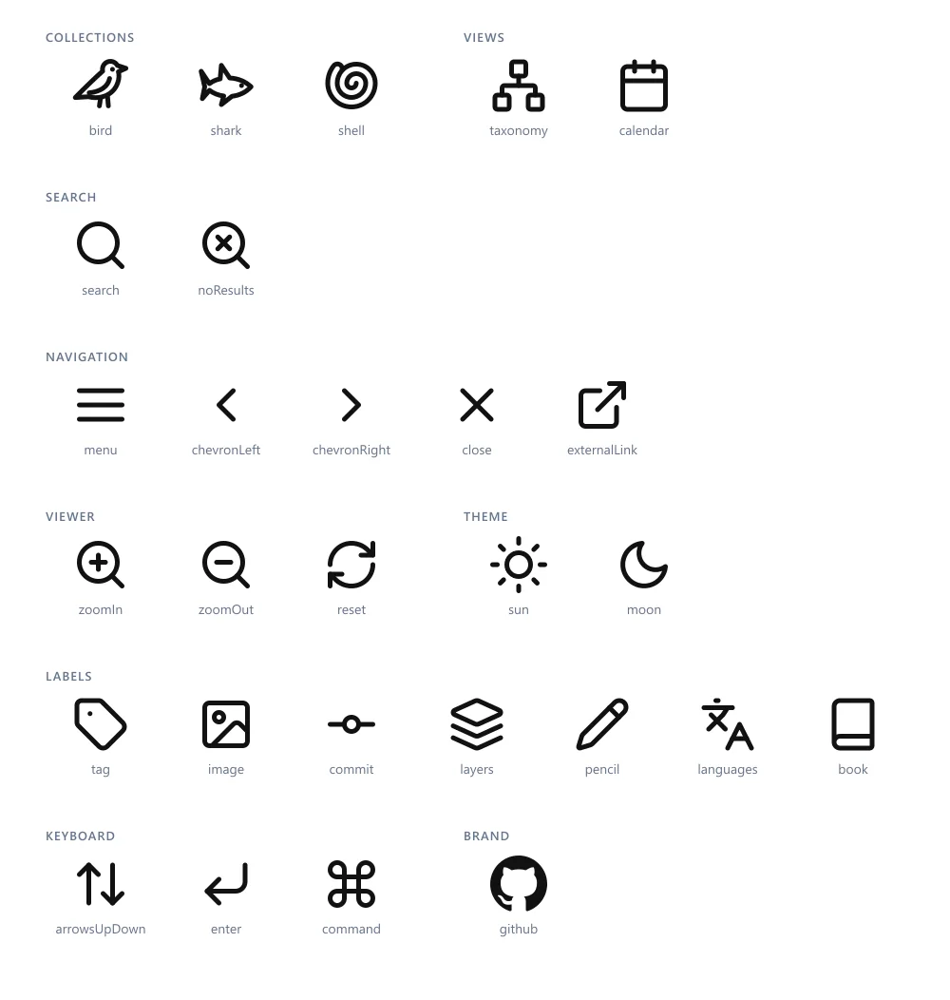

Oct 2024 to now · Web app · Ongoing
Building Wildlife Illustrated
A gallery that learned to check itself
I am drawing every bird recorded in the Maldives, and the drawings needed somewhere to live. I built a page for them, and I keep coming back to it: every few months, for a few weeks, usually to learn one new thing. Looking back over nine versions, most of what I learned was the same lesson in different places: stop trusting my own memory, and make the project check itself.
- Started
- October 2024
- Now on
- Version 0.9
- Drawn so far
- 18 of 276 species

Part I · Versions 0.1 to 0.3 · October 2024 to February 2025
Getting it online
A page, a way to publish it, and tools I did not yet understand. Everything ran on trust.
A page for two ducks
The list is long: 204 birds. A folder of image files does not show how far along I am, which family I have been avoiding, or what each bird is called in Dhivehi. I wanted the whole list on one page, with a grey shape for every species I had not drawn yet, so the gaps were as visible as the drawings.
The first version was a plain page written by hand. It went up on 10 October 2024 with the Lesser Whistling-Duck on it, and the Cotton Pygmy-Goose followed five days later.
Making it publish itself
I came back with a third drawing, the Garganey, and spent the next few weeks on everything around the page: a workflow so that a push publishes the site, a local build that worked, a favicon and a title card.
My deploy worked in the wrong order: delete what was published, then build, then copy the new files across. I only found out whether it had worked at the very end, and when the build failed the site stayed down while I debugged it. It took me until version 0.8 to see the fix.
More from this stretch
- Stopped tracking
node_modules. - Ended with a refactor of the whole script, the first of many.
Build tools
A week later I moved the project to Deno and esbuild. Nothing a visitor could see changed. I wrote my first tests here, for the build's handler and bundler, and added a licence.
Neither the tests nor the build survived. Three months later the site was down, and the next version started from an empty folder. It then went without tests until version 0.9, seventeen months later.
Part II · Versions 0.4 to 0.7 · May 2025 to March 2026
Making it mine
A framework I chose, a look, features, and more than birds. It grew faster than I could keep it in my head.
Starting over in Vue
The version before this one was written as React components. I left it alone for a few months, and when I came back the site was down. React had moved on a version, I had never locked the versions the project depended on, and the build no longer worked. I tried hard to fix it and could not.
So in May I started again in Vue, with Vite, and never looked back. What won me over was that a component is one file: its HTML, its CSS and its JavaScript together, where I can see all of it. The first Vue commit has a lock file in it. The next five are named "tried fixing", "tried fixing v2", "hopefully", "hoper fully" and "hoper fully v3".

This is the stretch with the most drawing in it, and not by plan. I had meant to take the drawing low and slow. Then the book for the N. Kendhikulhudhoo trip, the island of my Semester 4 project, needed birds, so six of them were drawn in a rush and went up on the site in one day in October.
More from this stretch
- The WebP files were made by hand: first through an online converter, then a Google Colab notebook. Nothing in the repository knew how to make its own images until January 2026.
- Thumbnails followed the six birds by four days.
- By December the list had moved from a text file to JSON, and the site counted how many were done.
- Two shells drawn in July, long before there was a shells collection.
- Fixed scrolling twice, once for phones.
Tailwind and the dark
I expected moving to Tailwind to break half the site. It took an afternoon and broke very little. The styles had lived in three separate files; with them written where they are used, the whole app went from 870 lines to 549, and dark mode came almost for free on the same day. It was the first rewrite that felt elegant rather than hard.

Keeping the stylesheet small
I had read enough horror stories in comment sections about stylesheets nobody dares to touch that I spent a real amount of time trying not to grow one. In November I cleaned the CSS up twice in one day and ended with more than I started. Tailwind is what finally cut it.
It has bloated again since, and I would rather show that than hide it. I think it is still manageable: it is one file, and a large part of what came back is a list of colours and sizes with names, not rules fighting each other.
More from this stretch
- A drawing of the Northern Shoveler in December, the only one of this stretch.
- A sidebar of families and a footer arrived with the restyle.
- Added git hooks. They are gone now; CI does that job.
Finding things
Straight on from the restyle, the site started to do more than show a grid. A drawing opens full-size with a panel beside it; there is a search bar; drawings can be sorted by the date they were made. Each one gained a note from me and, in February, its Dhivehi name.
The changelog here has two lines that show how much I was keeping in my head: "fixed versioning system", and "added triple check for bird count". Both numbers were kept by hand. The count got three checks. The version number was replaced in 0.8 with something that cannot drift.
More from this stretch
- The first image scripts in the repository: one command to convert a drawing and ship it, taught the next day to skip images already converted. Three weeks later I rewrote the build around it.
- Wrote down the known issues for the first time.
- Search, added here, came back in 0.7, 0.8 and 0.9.
More than birds, and one file less
The project outgrew its name. I restructured the site so a collection is data and not code, and three days after the first working version added sharks and shells on the same day. A new collection is now one entry in a file, a list of species and a folder of images.
Shrinking one file
App.vue had been growing since the rewrite. Everything went into it:
loading the list, filtering, scrolling, the theme. On 10 March I took it on as a
task in itself and tried to make it as small as I could. It went from 427 lines to
143 in a day.
The realisation that did it was simple. All the stitching of the interface, the
header, the sidebar, the grid and how they sit together, could move into one
component of its own. I called it UI.vue and renamed it
Chrome.vue the same day. With that gone, App.vue had
almost nothing left to do but start things.
Doing it taught me a distinction I did not have words for: the difference between code that does the work and code that says what should happen and leaves the work to something else. The second kind is called declarative; the first, imperative. The file at the top of an app should be almost all the second kind.
More from this stretch
{
"id": "birds",
"label": "Birds",
"groupLabel": "Family",
"itemLabel": "bird",
"links": [ { "label": "eBird", "url": "…?q={{common}}+ebird" } ]
}
- A collection's entry, shortened, as it is today.
- The Sand Dollar was drawn the day shells went in. It is still the latest drawing.
- Moved every type into its own folder.
- Search got its first rewrite, days after collections arrived, because it now had to look in three places.

Part III · Versions 0.8 and 0.9 · May to October 2026
Making it check itself
No new drawings. One by one, the things I had been trusting myself to remember were handed to the project.
Build first, publish second
This sounds obvious now, and it was one of the biggest things this project taught me. Since version 0.2 my deploy had deleted the live site first and built the new one second. On 12 May 2026 I rewrote it eleven times in one day, and somewhere in there it clicked: build first, and replace what is published only if the build succeeded.
before delete published site → build → copy files across
a failed build leaves nothing online
after build → check the result → publish
a failed build leaves the old site exactly as it was
A failed build now costs nothing: the old site stays up and I can take my time.
The image pipeline, untangled
Converting a drawing for the site had been an online converter, then a Colab notebook, then a script, then a rewrite of the script, then a restructure of the rewrite. By May it worked and I could not follow it. It took a few hours with the code spread out to untangle it into four steps that each do one thing.
scan read the list and the image folders, once plan work out what is new, what is missing, what is orphaned execute convert the images, date the new drawings report say what happened
The plan step touches nothing. It is only sets: what is listed, what is on disk, and the difference. That is why it could be tested later without a single image.
Either you spend hours banging your head against the wall until it falls into place and you are coding blind, or you take a pen and paper, draw the flow chart, and solve it. What I love about coding is that it feels like pure logic.
A number nobody types
The footer reads something like v0.9.161 · 18 drawings · 4f0f400.
Since this version only the first two numbers are written down anywhere. The
patch is the number of commits, the drawing count is read from the lists, and the
last part is the commit it was built from. It cannot drift, because there is
nothing to forget to update. The changelog lost its "Unreleased" heading for the
same reason: the site deploys on every merge, so nothing is ever unreleased.
More from this stretch: search, and a week chasing 100
Search, a journey of its own
Search looks like the smallest feature on the page and took the most returns. A search bar in February. A first rewrite in March. A refactor in May. Results across every collection with counts and arrow keys in June. Dhivehi names and Thaana script in July. In 0.9 it became a proper combobox that announces its results. By line count it peaked at 18% of the app, and is 589 of 3,753 lines today. It felt like half the project.

A week chasing 100
I spent about a week, in and out, running Lighthouse in Chrome and fixing whatever it complained about until the numbers stopped moving. Accessibility and SEO both reached 100. Most of it was small and unglamorous: text a shade too faint, a missing description, a favicon at the wrong path.
It also taught me that a score can be chased too far. One speed trick, telling the browser to skip drawing sections that are off screen, quietly broke the sidebar's sense of where you were on the page. I took it out again the same day.
- A performance pass: lazy images, debounced search, the full-size viewer loaded only when opened.
- Lint, format and build on every pull request; the unused deploy branch removed.
- I converted every drawing again on the day the pipeline was untangled, to prove it.
Stores, and the first tests
The state of the app moved out of one shared object into four stores: search, the
interface, the collections, and the drawing that is open. Components read them and
change them only through actions. App.vue fell from 252 lines to 93.
Then the idea from the deploy grew. If nothing should be published unless the build passes, nothing should be published unless the tests pass either. I wrote the first 44, and three days later the deploy would not run without them.
More from this stretch
- Every drawing got its own address, so a link can open the site straight at one bird.
- The full-size view pages through drawings in the order they were made.
- A refactor that removed 198 more lines than it added.
- Fourteen icon components collapsed into one, with a registry.

The tests find things
In one day the tests went from 44 to 147, and they started finding things that had been live the whole time.
- A drawing dated the 1st of a month showed under the previous month for anyone west of UTC. That is why the tests now run in four time zones.
- A slow collection could finish loading after you had switched away, and show its items under the wrong heading.
- If the list of collections failed to load, the spinner turned forever.
- Searching for "amp" could cut an "&" in half and break the highlighted name.
- 44 → 261
- tests, from July to October 2026
- 47.8 → 96.2%
- of lines covered; the build fails below 92%
- 4
- time zones the tests run in
More from this stretch
- The full-size view became a real dialog: focus moves in, Tab stays inside, and focus returns to the drawing you opened.
- Search announces how many results it found.
- The theme is applied before the first paint, so a dark-theme visitor never sees a white flash.
- A weekly run tries the property tests at twenty-five times the depth.

A look, written down
The realisation that set this off was a small one. The site used emoji for its collections and a mix of borrowed icons everywhere else. It struck me that every one of them could be drawn in the same style, however mundane the icon: a menu, a close button, an arrow. One grid, one stroke, round ends, no fills.
Once the icons matched, everything around them looked inconsistent, so I spent the next day writing a design guide to build against. It is there to make the next thing I build agree with the last. The guide is drawn by a script from the real colours and icons, so it cannot say one thing while the site does another. I then used the same idea for this portfolio's guide.
Why the accent is not random
I wanted the site to pick one of six accent colours at random on each load. The better version was one colour per collection: birds teal, sharks blue, shells rose. Then the colour tells you where you are. The menu has twelve hues, and a test measures the contrast of each. Amber, yellow and lime are out, and the first reason I wrote down for that was wrong. White text on them passes. It is their mid shade, used for the focus ring, that is too pale. I only know because the test measured it.

More from this stretch: the logo, the phone, the small things
A logo, in one sitting
The first idea was a bird stepping out of an unfinished frame, built from the bird icon. The critique was that it was a generic bird icon in a box. The second pass took five variants. The bird got its own outline and stands on the bottom line of a frame whose right side is missing, looking out of the page it was drawn on.
- A closed wing clogged below 24 px, so the wing is a single line.
- A longer tail ran into the frame's corner and turned into a blob, so it was lifted clear.
- Then the order flipped: the bird icon was redrawn from the logo's bird, so the tab, the placeholders and the logo all show the same animal.
- It never takes an accent colour. The accent changes with the collection; the logo must not.
- The browser-tab icon is still my whistling duck drawing, on purpose.
Three bugs I could only find by measuring
- On a 375 px phone the header was 485 px wide, so the view and theme buttons were off the edge of the screen.
- About 190 undrawn tiles were buttons that did nothing.
- Clicking the dark space around a drawing never closed the viewer, because an invisible layer swallowed the click.


Small things
- The key hints under search used ↑↓ and ↵ as plain text, so their shape came from whatever font the visitor had. I noticed from a screenshot where the return arrow looked wrong. They are icons now, and the guide has a rule about it.
- The footer needed a GitHub mark, and I wanted it in my line style. GitHub's rules do not allow altering their logo, so it is the only filled shape in the set.
- The grey silhouettes for undrawn species are now each collection's own icon, with a second set for the dark theme so 190 white squares no longer glow at night.
- Typing "a" into search listed 203 birds before the first shark. A collection with ten or more matches now shows seven and a "Show 196 more" row.

Checking the checks
The last lesson so far is that the things doing the checking need checking. I
added a report listing the source files no test touches. The first time it ran,
it named files I knew had tests. The coverage setup had a badly escaped pattern:
a rule meant to skip type files (.d.ts) was also skipping every file
whose name ended in "d.ts", including record.ts. The honest number
was half a point lower than the one I had been quoting.
- Merged, and never shipped. Twice in one week I merged a pull request and the change never reached the site. Each had been stacked on another branch and merged into it after that branch had already landed. The fix was two settings: delete branches on merge, and protect the main branch. I deleted fourteen stale branches that day.
- A test I made fail on purpose. The pipeline tests build a throwaway collection from tiny real images, run the real converter and delete it. To prove one of them could fail, I changed the converter from padding a wide drawing to cropping it, and watched the test go red.
- The documented command that never worked. Writing a step-by-step guide to the tests, I ran every command before writing it down. One that had been in the docs for a week failed with "unknown option".
raw_png/ (the drawings, not in git)
│
▼
1. Asset pipeline scan → plan → execute → report
▼
public/ collections.json · lists/birds.json · full/ · thumb/
│ the contract: fetched at runtime, never imported
▼
2. The site types ← helpers ← composables ← stores ← components
3. Tests and CI the same checks on every pull request and every deploy
How it is put together now: three small programs that meet only at a folder of plain files.
The shape of the code
The same story without words. Each bar is one layer of the app, as tall as the lines of
code in it, at ten points in the repository's history. Watch
App.vue on the right shrink, and the tests on the lower row arrive last
and outgrow everything.
This chart needs JavaScript. On 6 October 2026 the app was 104 lines of App.vue, 1,543 of components, 1,133 of composables, 262 of stores, 163 of helpers and 166 of types, with 376 lines of CSS, 1,669 of build scripts and 3,547 of tests around it. In May 2025 it was 119 lines of App.vue, one 61-line component and 224 lines of CSS.
Counted from the repository at each date. Versions 0.1 to 0.3 are not in its history.
Still open
A lot of it was over-engineered and rewritten for the sake of it, and that is exactly how I learned web development.
The site can now tell me when a build is broken, a date is wrong, an image is missing or a colour is too pale. It cannot draw. It is far ahead of the project it serves: there has been no new drawing since March. The next time I come back, it should be with drawings.
On the list
- Conservation status for each species.
- Seasonality: which monsoon each bird is seen in.
- More than one drawing per species.
- Tests for the components themselves, which are still checked by hand.